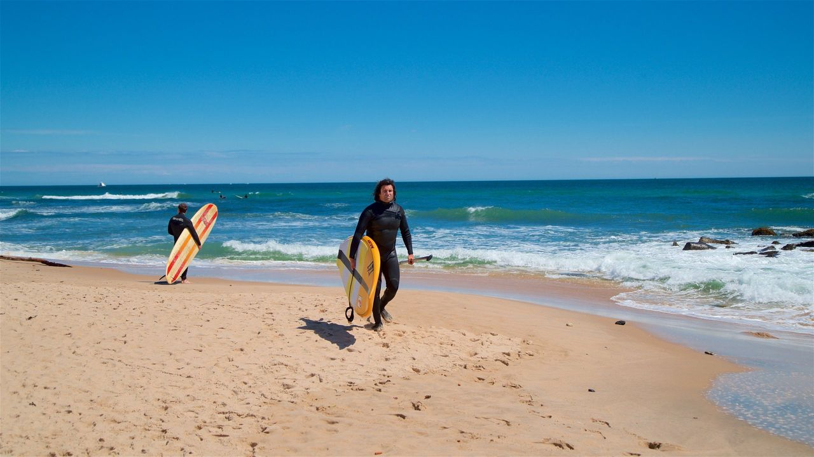

Ditch Plains Beach
悬崖环绕的大西洋海滩，初学者与长板冲浪皆宜；有无障碍洗手间、餐车、冲浪轮椅。
首页 / 本地公园 / 迪奇平原海滩

悬崖环绕的大西洋海滩，初学者与长板冲浪皆宜；有无障碍洗手间、餐车、冲浪轮椅（救生员值班时提供）。
冲浪（长岛最知名冲浪点之一）、游泳（救生员 9am–5pm，仅指定区域）、徒步（Rheinstein Park 步道）、4x4 海滩通行（持镇证、指定区域）。